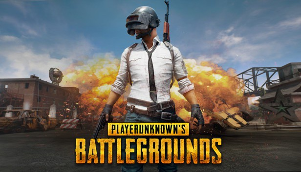

Top 10 meist verkaufte Spiele der Welt
Quelle: Wikipedia
| Platz | Name des Spieles | Verkaufte Einheiten | Erscheinungsdatum | Bild von dem Spiel |
|---|---|---|---|---|
| 1. | Tetris | ca. 495 Mio. | 6. Juni 1984 |  |
| 2. | Minecraft | ca. 200 Mio. | 17. Mai 2009 |  |
| 3. | Grand Theft Auto V | ca. 135 Mio. | 17.September 2013 |  |
| 4. | Wii Sports | ca. 82.9 Mio. | 19. November 2006 |  |
| 5. | PlayerUnknown'sBattlegrounds (PUBG) | ca. 50 Mio. | 20.Dezember 2017 |  |
| 6. | Overwatch | ca. 50 Mio. | 24.Mai 2016 |  |
| 7. | Super Mario Bros. | ca. 48.2 Mio. | 9.November 2010 |  |
| 8. | Call of Duty: Black Ops | ca. 41 Mio. | 9.November 2010 |  |
| 9. | Mario Kart Wii | ca. 37.3 Mio. | 10.April 2018 |  |
| 10. | Call of Duty: Black Ops II | ca. 37 Mio. | 12.November 2012 |  |